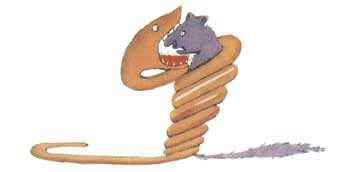
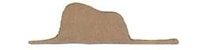
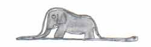

当我还只有六岁的时候，在一本描写原始森林的名叫《真实的故事》的书中，看到了一副精彩的插画，画的是一条蟒蛇正在吞食一只大野兽。
这本书中写道：“这些蟒蛇把它们的猎获物不加咀嚼地囫囵吞下，尔后就不能再动弹了；它们就在长长的六个月的睡眠中消化这些食物。”
当时，我对丛林中的奇遇想得很多，于是，我也用彩色铅笔画出了我的第一副图画。我的第一号作品。它是这样的：
我把我的这副杰作拿给大人看，我问他们我的画是不是叫他们害怕。
他们回答我说：“一顶帽子有什么可怕的？”
我画的不是帽子，是一条巨蟒在消化着一头大象。于是我又把巨蟒肚子里的情况画了出来，以便让大人们能够看懂。这些大人总是需要解释。我的第二号作品是这样的：
大人们劝我把这些画着开着肚皮的，或闭上肚皮的蟒蛇的图画放在一边，还是把兴趣放在地理、历史、算术、语法上。就这样，在六岁的那年，我就放弃了当画家这一美好的职业。我的第一号、第二号作品的不成功，使我泄了气。这些大人们，靠他们自己什么也弄不懂，还得老是不断地给他们作解释。这真叫孩子们腻味。
后来，我只好选择了另外一个职业，我学会了开飞机，世界各地差不多都飞到过。的确，地理学帮了我很大的忙。我一眼就能分辨出中国和亚里桑那。要是夜里迷失了航向，这是很有用的。
这样，在我的生活中，我跟许多严肃的人有过很多的接触。我在大人们中间生活过很长时间。我仔细地观察过他们，但这并没有使我对他们的看法有多大的改变。
当我遇到一个头脑看来稍微清楚的大人时，我就拿出一直保存着的我那第一号作品来测试测试他。我想知道他是否真的有理解能力。可是，得到的回答总是：“这是顶帽子。”我就不和他谈巨蟒呀，原始森林呀，或者星星之类的事。我只得迁就他们的水平，和他们谈些桥牌呀，高尔夫球呀，政治呀，领带呀这些。于是大人们就十分高兴能认识我这样一个通情达理的人。